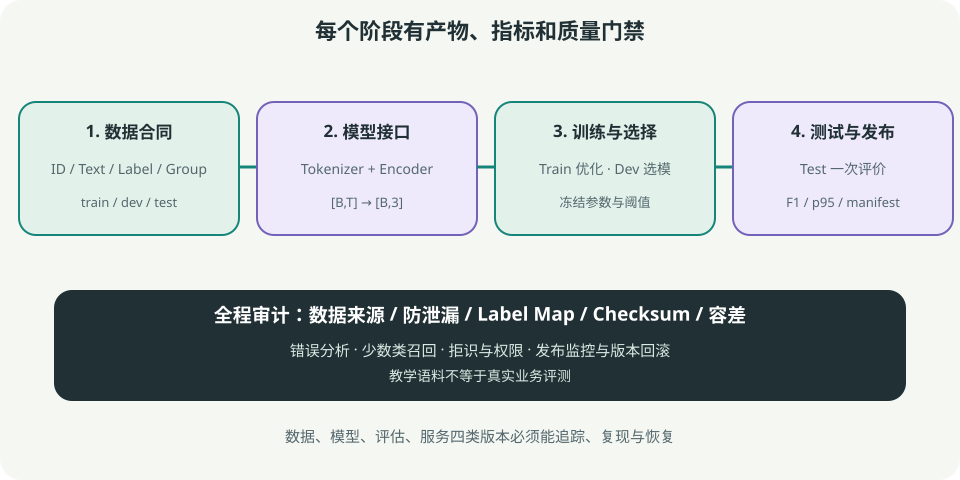

1. 先把“中文 NLU 系统”缩成一个可检验的任务合同
一个所谓“中文自然语言理解系统”可以做意图分类、命名实体识别、问答、相似度检索等很多事。如果只写一句“训练 BERT 再部署”，读者无法知道输入、输出与评价标准。本综合项目选择单标签中文意图分类作为端到端最小闭环：输入一个中文 utterance，输出固定集合中的一个意图及置信度；不自动执行下单、发送消息或任何不可逆外部操作。
教学标签定义为 greeting（问候）、weather（咨询天气）、food（餐饮相关请求），三者都只是离线示例。生产系统应另外定义澄清、未知识别、拒绝/无法判断、业务权限与多意图输入。多标签、NER 和 slot filling 的损失函数与标注单位不同，不能通过把它们塞进同一个标签字段来“完成全部 NLU”。
本仓库同时给出纯标准库可运行的词/字 n-gram 教学基线，以及需要用户显式提供兼容 checkpoint才能运行的 Transformer 微调示范。前者用于验证数据契约、切分、指标与导出，不代表 BERT 性能复现；后者展示真实 Encoder 接口，不预先假定一定能下载权重或获得 benchmark 分数。
2. 数据契约：样本 ID、组 ID、文本、标签、切分
每条 JSONL 示例至少包含 id、text、label、group 和 split。ID 唯一确定记录；group 标记同一源用户/模板/近重复族，目的是阻止同一个语义模板的一系列轻微改写同时出现在 train 和 test；split 只能为 train/dev/test。正式数据还应注明来源许可、采集时间、去敏策略、语言区域和标注复核状态。
{"id":"tr-w01","text":"今天可能下雨吗","label":"weather","group":"weather-tr-01","split":"train"}
{"id":"dev-f01","text":"想找附近的餐厅","label":"food","group":"food-dev-01","split":"dev"}
示例中的文本与标签是人工构造，不得当作真实用户语料或可说明业务泛化性能的基准。真正开发前要先明确 label taxonomy 与拒识边界，再制定源级/时间级划分规则；先切数据后构造增强和负例，避免在全数据上做去重或超参数搜索时泄漏评测集信息。
3. 为什么随机按行 8:1:1 不足以避免数据泄漏
如果把“预订两人晚餐”与“帮我订两个人的晚饭”当作两条无关样本随机分配到 train/test，模型可能只是在考试中见到训练句的轻微改写；近重复 family 应尽可能共享 split。若数据来自不同客户、文档、时间段，还应根据最终部署的泛化目标选择 user/session/document/time 分组。
把 valid/test 融入词表学习、挑选最长文本策略、调整 label_map 或自动搜阈值，都会在不同程度上利用评估数据。可以在 dev 上选 epoch、学习率、拒识阈值，完成选择后对冻结模型和阈值只用 test 评估一次；如果看 test 结果后再次修改模型，需要新的未触碰测试集来估计泛化。
对小数据集，分组切分可能造成某些类别在某一个 split 缺失；这是应该提前解决的实验设计问题，而不是在评测时静默忽略缺少的类别。本项目验证每个 split 都包含预期标签，以便计算 macro F1。
4. Tokenizer → Encoder → 意图 Logits 的张量合同
设 batch 大小 B、padding 后长度 T、Encoder 隐藏宽度 H、类别数 C=3。Tokenizer 输出 input_ids∈Z[B,T]、attention_mask∈{0,1}[B,T]，某些 checkpoint 还有 token_type_ids。Encoder 得到 [B,T,H]；句级分类 head 读取约定的 pooled representation [B,H] 并输出 logits [B,C]。
必须使用与预训练权重配套的 tokenizer：词表 IDs、中文字符切分、special tokens、截断长度与模型配置不匹配可能产生错误，却不会总是立即崩溃。对于中文模型，不能假设所有汉字各对应单个 token，也不要用代码点长度充当 token 长度。
训练时用整数 label ID 与 logits 计算 cross-entropy；推理时 softmax 仅用于概率解释/阈值，直接对 logits 做 argmax 也可得到相同类别。校准之前的 softmax 最大值不是可信度保证：分布外输入、无效文本和多意图句子可能令模型高置信地误判。
5. 从分类损失到 Macro F1 的可审核公式
对于一条标签 y 与 logits z，交叉熵对应对真实类的 softmax 负对数：
实际代码应使用数值稳定的 cross_entropy(logits, labels) 而不是手动先 softmax 再取 log。对于不平衡的中文意图数据，单纯总体 accuracy 可能被高频类别主导；至少报告每类 precision/recall/F1、macro F1、confusion matrix 与错误样本示例。
当某类预测/真实正例都为零时必须定义 zero-division 约定，并在报告中注明；本项目约定无分母则 F1=0，而不是凭空定义为“完美预测”。Macro F1 让每类占同等权重，仍需结合真实业务中不同错误代价解释结果。
6. 完整系统里，每一步都应有可记录的产物

最小交付物是：sample.jsonl 样本、固定 label IDs 的训练配置、可运行基线、BERT 微调脚本、评估结果 JSON、错误分析模板、模型+tokenizer manifest、部署/回滚步骤。参考项目入口为 中文 NLU 最小可复现项目。
教学基线不下载外部库，用字符 n-gram Multinomial Naive Bayes 模型走通训练/预测/指标；可选的 Transformer 脚本使用用户已经拥有的 checkpoint，在其明确安装 PyTorch/Transformers 后执行，避免把网络、GPU 和版权许可假定成总可用条件。
7. 可选 Transformer 微调：哪些环节必须锁定
运行前固定 seed、model revision、tokenizer revision、max_length、batch、epoch、学习率、weight decay、设备和 torch/transformers 版本。DataLoader 只从 train 创建 optimizer step；每个 epoch 用 dev 选最优 checkpoint；最终再一次性评估 test。模型返回的 logits 应在同一个稳定 label mapping 上解码，训练和服务不得自行重新按字母排序 label。
对于显存紧张的环境，可以使用动态 padding、gradient accumulation、混合精度或 PEFT，但必须清楚记录并单独审计；课程中的示例不把这些技巧的默认存在等同于官方 BERT 原论文复现。若产物是 tokenizer+模型+config，应该把文件、版本与原始数据来源存入可检查的 manifest。
8. 推理需要拒识，分类不等于执行操作
预测 API 的最小契约可以返回 {label, confidence, model_version, accepted}。confidence 可以来自 softmax，但阈值需要只用 dev 或另一个独立校准集选择；对高风险/不可逆动作，应将模型输出视作待确认的意图候选，而非直接执行请求。
若用户输入“把我的地址告诉别人”，模型可能将其误分配为其他已知意图；正确系统需要 OOD/unknown 策略、长度与字符限制、敏感信息脱敏、访问权限和人工审查路径。自然语言理解的可靠性不止是在一个三分类玩具样本上取最高类别。
9. 交互：一条错误切分会怎样污染项目
点击不同案例，检查哪个门禁必须发现问题。交互是固定教学规则，不会把文本发送到外部服务。
项目质量门禁
若同一个 group 在 train/test 均出现：拒绝继续训练或报告 test。 这说明来源/改写样本跨切分，评估可能高估泛化。 先重新按 group 切分，再准备数据增强与模型选择。
10. 测试、版本、部署与误差分析的最后一关
建立单元测试覆盖标签映射稳定、无重复 ID、group 不跨 split、预测可重复、未知标签报错、概率有限与 macro F1 的边界。对于真正的 Transformer 训练，至少做一次本地 CPU small-batch smoke test，检查 logits shape、反向梯度与模型/词表文件能被重新加载。
上线前审查不同长度和语种混排样本、拒识阈值、低频类别及冷启动 p95。生产报告必须注明人工构造样本并非 benchmark；没有执行真实训练时不得写“达到 xx%”。系统能否跑在某个设备上，应在目标设备上实际测量并留证据。
关键结论
- 任务合同、来源与 group 级防泄漏，比先选择模型更基础；dev 选模型，test 在冻结后评价。
- Tokenizer、Encoder 与 label2id 是一个整体；Macro F1、错误分析、拒识、设备延迟应共同进入发布合同。
- 标准库教学基线能跑通端到端数据治理与模型部署结构；BERT 微调需明确 checkpoint 与依赖后真实运行，不能凭脚本存在宣称结果。